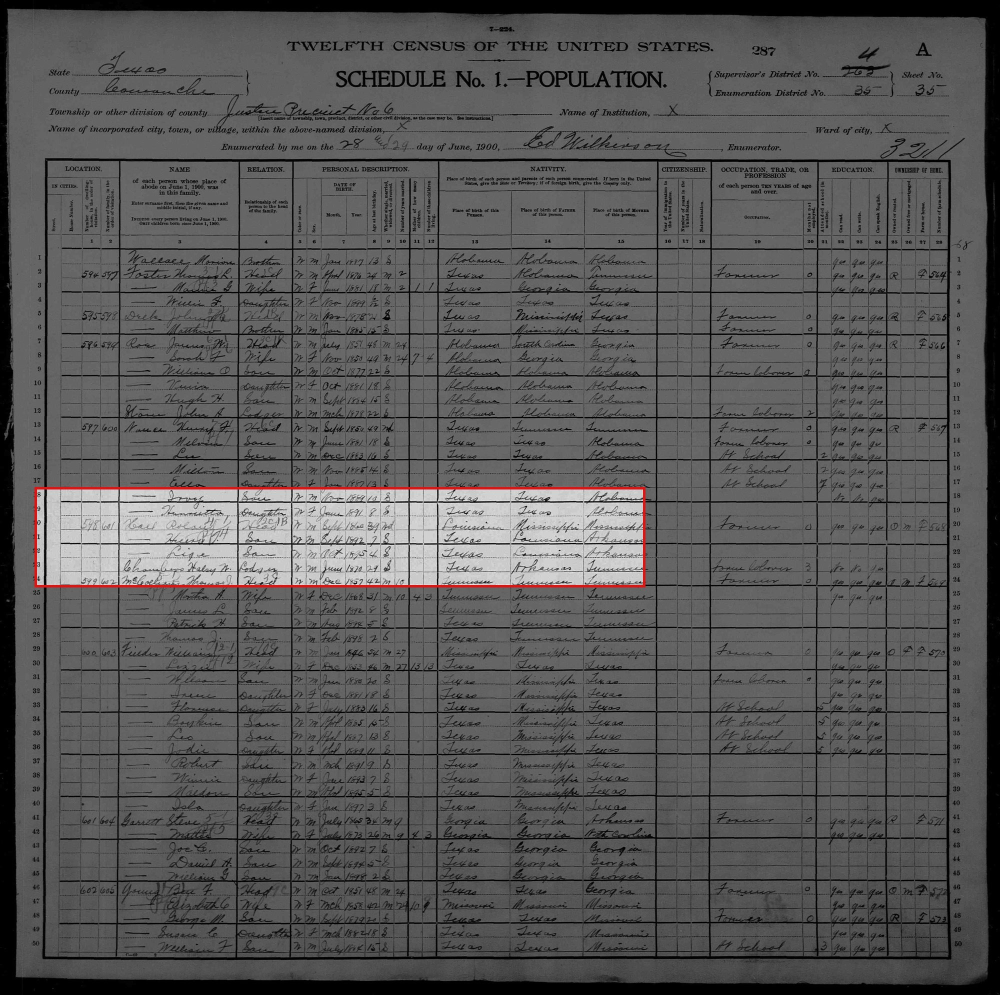

United States, Census, 1900
The record in context. The crop as shown on the person's page; below, where it sits on the full page.


Untouched original: web size · full resolution (3826 × 3806 px, 734 KB).
The record in context. The crop as shown on the person's page; below, where it sits on the full page.
